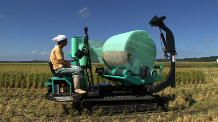
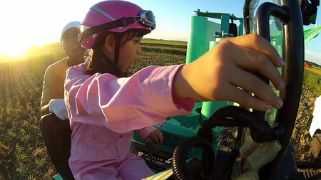
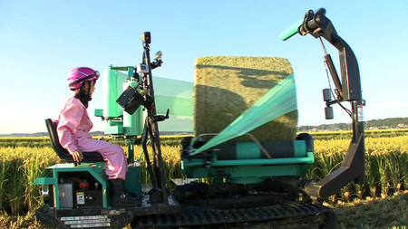
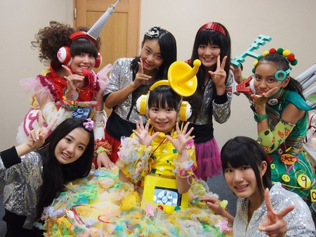

【乗りすけFile】 No.51：自走ラップマシーン（１０月３１日放送）
乗りすけFile No.51：自走ラップマシーン（１０月３１日放送）



全長：3m04cm
全高：2m06cm
全幅：1m66cm
重量：1180kg
価格：約325万円
飼料収穫機（乗りすけFile No.50）が成形したロール状の飼料にラッピングを施す農業機械「自走ラップマシーン」。収穫された飼料用作物はビニール製のフィルムでラッピングし、1ヶ月以上発酵させることにより家畜の餌となる。
300㎏を越えるロール飼料は人力では持ち上げることすら困難なため、ラッピングするためには必要不可欠な機械である。前方からロールを拾い上げ、ラッピングしながら搬送、トラックへの積込み作業までこの1台でできる。
最高速度は約6km/h。全自動で行われるラッピングは2本のフィルムによるダブルストレッチ方式。素早く包み込み、台全体の横回転とコンベアによる縦回転で飼料のロール全体を隙間なく完全密閉する。
これまでの【乗りすけFile】はこちら
投稿者:大天才テレビジョン社員３号 | 投稿時間:18時42分 | カテゴリ：乗りすけさん | 固定リンク


 " title="ソーシャルブックマークについて">
" title="ソーシャルブックマークについて">
※NHKサイトを離れます。
【てれび戦士プロデュース室】てれびちゃんまさかの敗戦！
みなさんこんにちは。
てれび戦士プロデュース室の通称「あなた」ことあなたです。
本日放送のてれび戦士プロデュース室はいかがでしたか？「ザ・ベスト１０」で１位を獲得し、ようやくアイドル戦国時代を戦い抜く準備は出来ていたと思っていたのですが、結果はご覧の通り。１勝２敗で惜しくも敗れてしまいました。
この結果は出川さんも重く受け止めていたようです。今後何らかの「てれびちゃん強化策」が打ち出されるかもしれません。
対戦相手のKGY40Jr.は千葉県鎌ヶ谷市のご当地アイドル。
普段は、地元のショッピングセンターの一角を勝手に「KGY40Jr.劇場」と名付けて公演を行っているほか、月に１度は東京・渋谷でもライブ活動を行っています。
ちなみに最後の「GOOD MORNING KAMAGAYA」の曲の中で、おじさんがひたすら合いの手を入れていて気になった方も多いかと思います。
あの人は「皮茶パパ」という名前で、「KGY40Jr.」の作詞、作曲、プロデュースを務める偉い人です。決して彼女たちが歌うのを邪魔しているわけではないので、あしからず。実は皮茶パパの合いの手がKGYのライブの恒例になっていて、これを楽しみに来ている人もいるとかいないとか、なのだそうです。
なお、先日より、「てれび戦士プロデュース室」のページに、４月からこれまでの「てれびちゃん年表」を作っておりますので、こちらもご覧頂ければと思います。

※戦いを終えて和気あいあいの両軍
投稿者:大天才テレビジョン社員１号 | 投稿時間:18時30分 | カテゴリ：てれび戦士プロデュース室 | 固定リンク
" title="ソーシャルブックマークについて">
※NHKサイトを離れます。
【５年前の私】金子隼也
５年前の僕、ちょうど小学１年生。
サッカー大好きなのは今でも変わってないかな。
学校から帰ると玄関にランドセルを置いて遊びに行く、そしてその後サッカーの練習って日々でした。
さすがに玄関に荷物を置いて遊びには行かないけど。
あっ！
最近、夜は肌寒くなってきました。寒くなると「焼きイモ」食べたくなりますよね。黄金色の焼きイモ、最高！今も大好きです。
焼きイモ屋さん、来ないかなぁー。

投稿者:金子隼也 | 投稿時間:18時00分 | カテゴリ：We are 大天才テレビジョン | 固定リンク
" title="ソーシャルブックマークについて">
※NHKサイトを離れます。